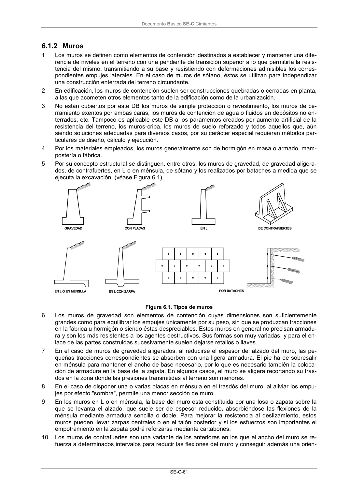

DB-SE-C · 6.1.2 Muros · versión 2019-12-20
SHA256: a71133f4b0dca253e45ea3071c70f2a512354bcc5cd841bf89b1a502f567ac5e · página física 66 de 165 · métodos de encabezado
solo si están cotejados.
Formatos: Markdown · JSON de bloques · PDF p. 66 · imagen PNG
Documento Básico SE-C Cimientos SE-C-61 6.1.2 Muros 1 Los muros se definen como elementos de contención destinados a establecer y mantener una dife- rencia de niveles en el terreno con una pendiente de transición superior a lo que permitiría la resis- tencia del mismo, transmitiendo a su base y resistiendo con deformaciones admisibles los corres- pondientes empujes laterales. En el caso de muros de sótano, éstos se utilizan para independizar una construcción enterrada del terreno circundante. 2 En edificación, los muros de contención suelen ser construcciones quebradas o cerradas en planta, a las que acometen otros elementos tanto de la edificación como de la urbanización. 3 No están cubiertos por este DB los muros de simple protección o revestimiento, los muros de ce- rramiento exentos por ambas caras, los muros de contención de agua o fluidos en depósitos no en- terrados, etc. Tampoco es aplicable este DB a los paramentos creados por aumento artificial de la resistencia del terreno, los muros-criba, los muros de suelo reforzado y todos aquellos que, aún siendo soluciones adecuadas para diversos casos, por su carácter especial requieran métodos par- ticulares de diseño, cálculo y ejecución. 4 Por los materiales empleados, los muros generalmente son de hormigón en masa o armado, mam- postería o fábrica. 5 Por su concepto estructural se distinguen, entre otros, los muros de gravedad, de gravedad aligera- dos, de contrafuertes, en L o en ménsula, de sótano y los realizados por bataches a medida que se ejecuta la excavación. (véase Figura 6.1). Figura 6.1. Tipos de muros 6 Los muros de gravedad son elementos de contención cuyas dimensiones son suficientemente grandes como para equilibrar los empujes únicamente por su peso, sin que se produzcan tracciones en la fábrica u hormigón o siendo éstas despreciables. Estos muros en general no precisan armadu- ra y son los más resistentes a los agentes destructivos. Sus formas son muy variadas, y para el en- lace de las partes construidas sucesivamente suelen dejarse retallos o llaves. 7 En el caso de muros de gravedad aligerados, al reducirse el espesor del alzado del muro, las pe- queñas tracciones correspondientes se absorben con una ligera armadura. El pie ha de sobresalir en ménsula para mantener el ancho de base necesario, por lo que es necesario también la coloca- ción de armadura en la base de la zapata. En algunos casos, el muro se aligera recortando su tras- dós en la zona donde las presiones transmitidas al terreno son menores. 8 En el caso de disponer una o varias placas en ménsula en el trasdós del muro, al aliviar los empu- jes por efecto "sombra", permite una menor sección de muro. 9 En los muros en L o en ménsula, la base del muro esta constituida por una losa o zapata sobre la que se levanta el alzado, que suele ser de espesor reducido, absorbiéndose las flexiones de la ménsula mediante armadura sencilla o doble. Para mejorar la resistencia al deslizamiento, estos muros pueden llevar zarpas centrales o en el talón posterior y si los esfuerzos son importantes el empotramiento en la zapata podrá reforzarse mediante cartabones. 10 Los muros de contrafuertes son una variante de los anteriores en los que el ancho del muro se re- fuerza a determinados intervalos para reducir las flexiones del muro y conseguir además una orien-
